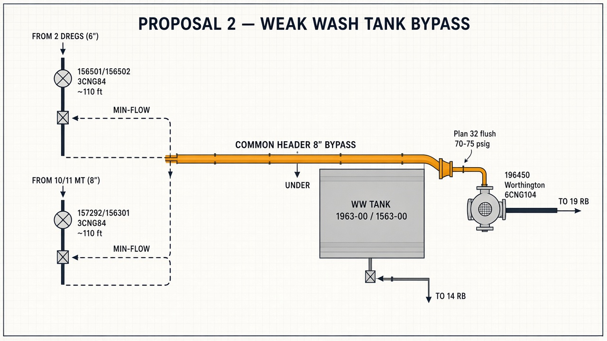

Engineering canvas: problem framing, OEM curve–checked hydraulics, P&ID/proposal layout, and the recommended capital solution for feeding booster 196450 without tank static head.
Create a bypass around Weak Wash Tank 1963-00 / 1563-00 and combine two weak-wash feeder discharges into a common header into the suction of booster 196450 (Worthington 6CNG104), discharging to 19 RB.
Bypassing the atmospheric tank removes the buffer between feeders. If mismatched pumps run together into one solid header, the higher-head unit can dead-head the lower-head unit through its check valve.
| Source | Pump (SW) | Model | Line | Shut-off (OEM) |
|---|---|---|---|---|
| From 2 Dregs | 156501 / 156502 | 3CNG84 · 9.50" | 6" | ~110 ft |
| From 10/11 MT | 157292 or 156301 | 4CNG84 · 8.00" or 6CNG84 · 9.50" | 8" | ~75 ft or ~102 ft |
| Booster → 19 RB | 196450 | 6CNG104 · 11.875" | 6" suction | ~156 ft (self) |
Worthington End Suction Centrifugal Pumps – Ratings (catalog 1750 RPM). Stated heads from the original write-up vs curve shut-off at Q = 0.
| Pump | Stated | OEM curve | P @ S.G. 1.10 | Result |
|---|---|---|---|---|
| 3CNG84 / 9.50" | ~110 ft | ~110 ft (A-1448) | 52.4 psig | MATCH |
| 4CNG84 / 8.00" | ~75 ft | ~75 ft | 35.7 psig | MATCH |
| 6CNG84 / 9.50" | ~88 ft | ~100–102 ft (A-1452) | ~48.5 psig | UNDERSTATED |
| 6CNG104 / 11.875" | ~136 ft | ~156 ft (A-1454) | 74.3 psig | UNDERSTATED |
Use A-1454 for 196450 (eye 27 in²). Do not use large-eye A-1456 (~112 ft). Do not use 60 ft for 157292 — OEM is ~75 ft.
Yellow path = new bypass / common header (all weak wash). Gray tank path remains available for 14 RB. Plant P&ID 42303-C green highlights show upstream runs toward the WW tank.

| Check | Finding | Status |
|---|---|---|
| Casing (52.4 + 74.3 ≈ 127 psig) | Below Class 150 typical 175–275 psig | PASS |
| Axial thrust @ elevated suction | Standard CNG frame expected adequate | PASS |
| Mechanical seal (abrasive WW) | Needs API Plan 32 flush ≥15–20 psi above suction | CONDITIONAL |
| Parallel 3CNG84 + 4CNG84 on one header | 110 vs 75 ft → weaker check closes → dead-head | FAIL w/o protection |
Build the yellow bypass as drawn. Protect feeders with min-flow + interlocks. Same fluid on all legs — no contamination issue at the tee.